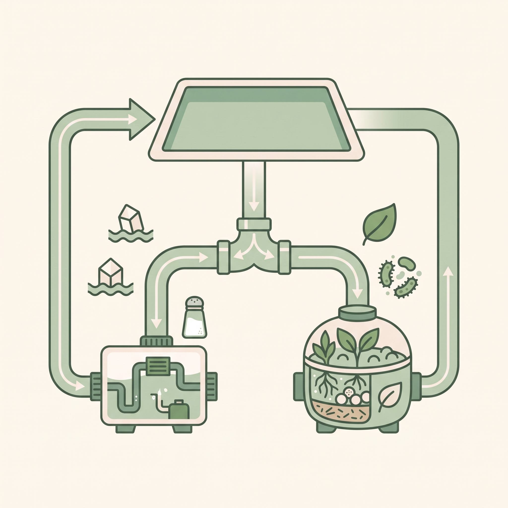
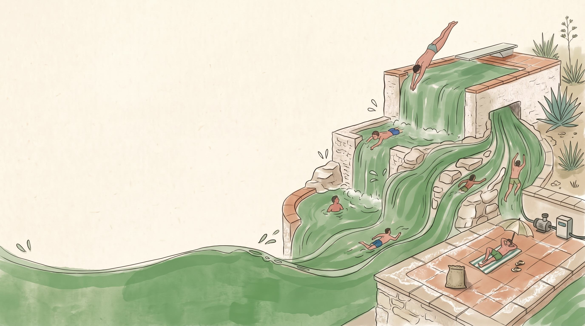
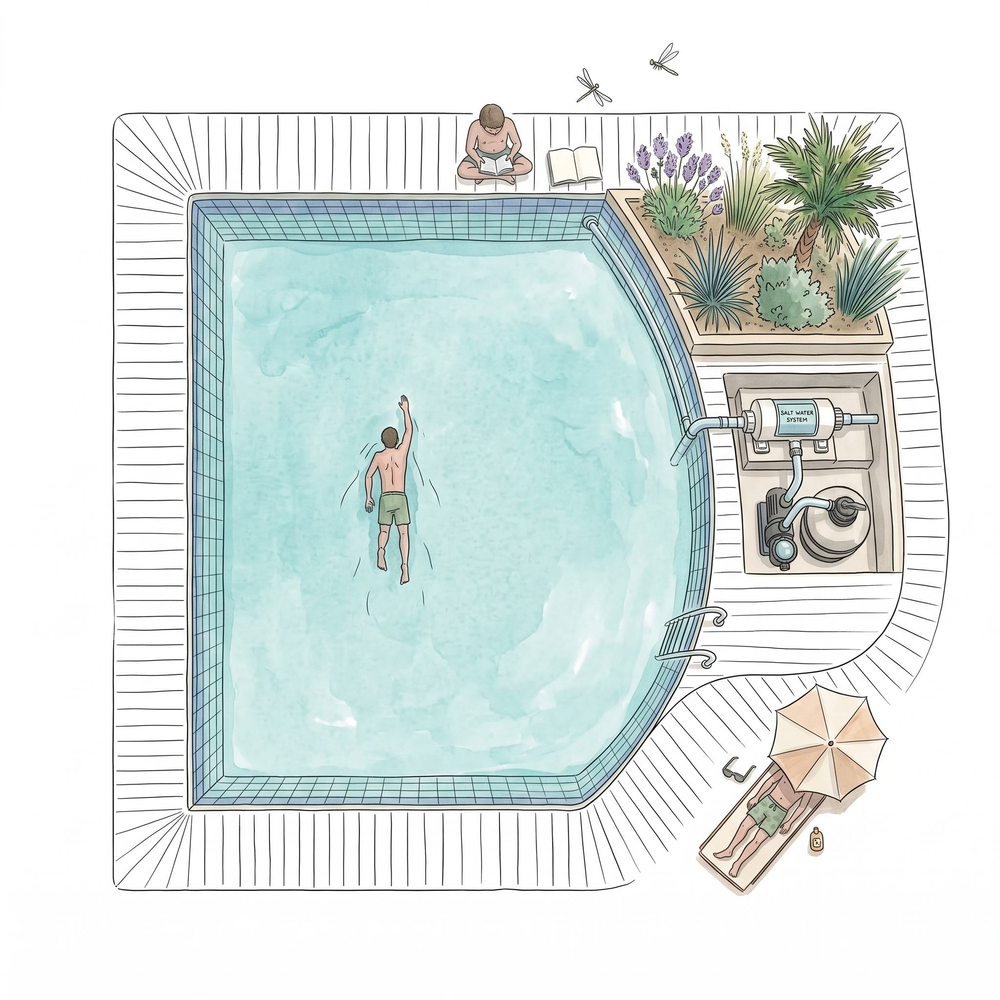
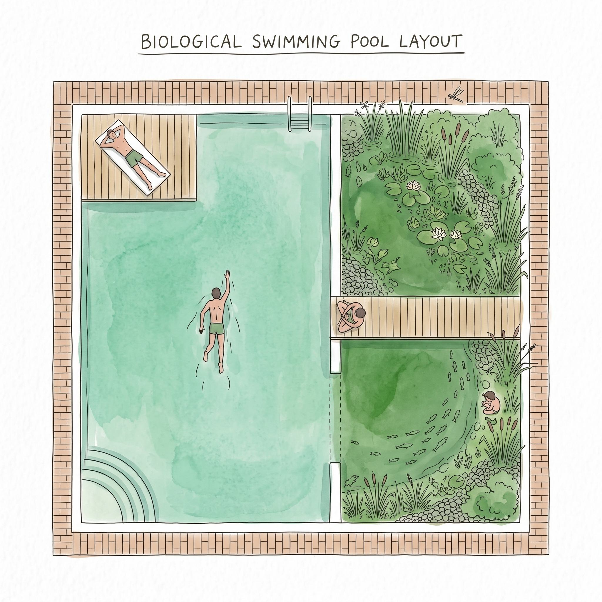
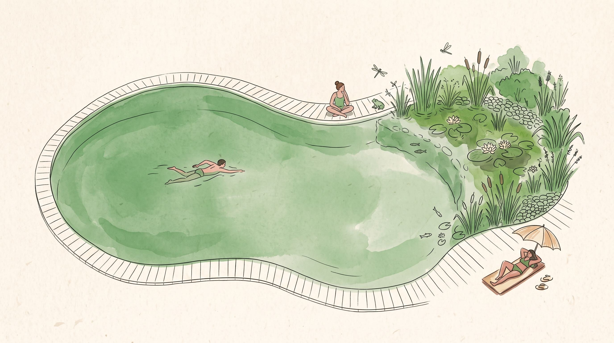

Pool Conversion
Convert your existing pool to a salt-water or bio-organic system.
Get your planMove away from traditional high-chlorine pool care with salt-water and bio-organic pool solutions designed for cleaner, more comfortable swimming.
Convert. Maintain. Swim Cleaner.

At Honest Pools, we believe pool maintenance should be simple, transparent and based on what the water actually needs.
We specialize in salt-water pools and bio-organic pool care, helping pool owners move toward smarter, more controlled alternatives to traditional pool maintenance.
From converting an existing pool to keeping it clean and balanced, we provide specialist care for salt-water and bio-treated pools.

Convert your existing pool to a salt-water or bio-organic system.
Get your plan
Cleaning, water balancing, salt monitoring, chlorinator checks and equipment inspection.
Get your plan
Bio-treatment management, water testing, cleaning, filtration checks and water-quality monitoring.
Get your planWe don't believe in unnecessary chemical dosing or one-size-fits-all maintenance. Our approach focuses on:
Understand the water before treating it.
Use the right treatment for the pool.
Keep water quality stable over time.
Clear recommendations without unnecessary treatments.
Whether you choose salt-water or bio-organic pool care, the goal is the same: clean, balanced and comfortable pool water.

Controlled salt chlorination with regular water balancing and system monitoring.

Bio-based treatment combined with controlled water management and filtration.
We inspect your pool, filtration system and current water condition.
We identify the most suitable treatment and maintenance approach.
We carry out the conversion or establish your ongoing maintenance plan.
We continue to clean, test and maintain your pool for consistent water quality.
“Understand the water. Use the right treatment.
Maintain it consistently.”
Looking to convert your pool or improve the way it's maintained?
Let's find the right solution for your pool.